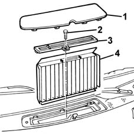
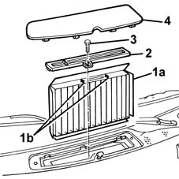
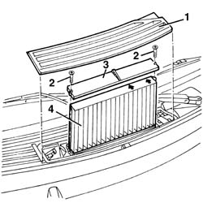
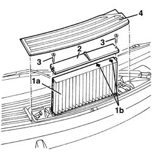

5010B09 PURIFYING FILTER (ANTIPOLLEN) FILTER ELEMENT - REPLACE
- Path
- Procedures > 50 AUXILIARY UNITS > 5010 HEATING/VENTILATION - MISCELLANEOUS > 5010B HEATING/VENTILATION AIR PIPES AND DUCTS > 5010B09 PURIFYING FILTER (ANTIPOLLEN) FILTER ELEMENT - REPLACE
- Kind
- repair procedure (removal / refitting; the operation number is the code)
- Applies to
- all engines; all production periods
- Interactive page
- https://sloeber94.github.io/elrnDB-fMltpl/en/#/2891763
Applies to: all engines; production: fino a 05/99, da 09/03, da 06/99 a 03/02, da 04/02 a 08/03, fino a 05/04
 Removing
Removing
 Refitting
Refitting1. Remove the filter cover.
2. Undo the bolt.
3. Remove the cover.
4. Extract the filter element.

Applies to: all engines; production: fino a 05/99, da 09/03, da 06/99 a 03/02, da 04/02 a 08/03, fino a 05/04
Refitting
RemovingCheck that the filter element is not damaged or clogged.
1. Position the filter element (1a).
The reference arrows (1b) should be facing towards the passenger compartment.
2. Position the cover.
3. Tighten the bolt.
4. Fit the filter cover.

Applies to: all engines; production: da 06/04
Removing
Refitting1. Release the filter cover.
2. Undo the bolts.
3. Remove the cover.
4. Extract the filter element.

Applies to: all engines; production: da 06/04
Refitting
RemovingCheck that the filter element is not damaged or blocked.
1. Position the filter element (1a).
The reference arrows (1b) should be facing the passenger compartment.
2. Position the cover.
3. Tighten the bolts.
4. Fit the filter cover.

Topics that link to this page (11)
- L02 CLIMATE CONTROL NOT WORKING / (NO AIR DELIVERY)
- U10 UNPLEASANT CLIMATE CONTROL ODOURS
- 0010K21 20,000km service for emission control versions with a/c
- 0010K48 40,000km service for emission control versions with a/c
- 0010K61 60000 service coupon, emission control version
- 0010K85 80,000km service for emission control versions with a/c
- 0010M08 1000,000km service for emission control versions with a/c
- 0010M21 120000 km service coupon for emission control versions with air conditioner
- 0010M41 140,000km service for emission control versions with a/c
- 0010M68 160,000km service for emission control versions with a/c
- 0010M81 180000 km service coupon foe emission control versions with air conditioner